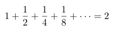
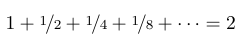
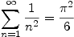
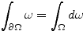
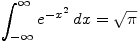

I have left Harvard as of July 1, 2008 to take a position at
NYU.
This website has been cached and left static. Feel free to browse
my
new website,
aka "What the heck is a Clinical Associate Professor?"
05.07.07
Posted in Math, LaTeX at 7:47 am by leingang
I recently got the inaugural issue of The Harvard College Mathematics Review. It’s very nice and obviously took a lot of work
Here’s the list of student articles:
- Dunking Donuts: Culinary Calculations of the Euler Characteristic (Alexander P. Ellis, ‘07)
- Dirichlet’s Prime Number Theorem: Algebraic and Analytic Aspects (Igor Rapinchuk, ‘07)
- Quivers (Virigina Fisher ‘08 et al)
- A Fitness-Based Model for Complex Networks (Zhou Fan ‘10)
- Does Every Polynomial Root have a Simple Approximation? (Bryan Gin-Ge Chen ‘07
Plut there’s an article about the ABC conjecture by Prof. Noam Elkies, a list of problems, and a nice little anecdote about teacher preparation by Dennis Gaitsgory.
And since I’m talking a lot of TeX these days, I’ll say that there are some very nice graphics done in METAPOST by Zachary Abel, ‘10.
technorati tags:hcmr, latex, undergraduate
Blogged with Flock
Permalink
05.02.07
Posted in Computing, LaTeX at 10:57 am by leingang
This is a sweet little package to make your LaTeX mathematics prettier. It provides a command \nicefrac that writes fractions with a diagonal dividing line rather than numerator strictly above the denominator. So rather than type
\[ 1 + \frac{1}{2} + \frac{1}{4} + \frac{1}{8} + \cdots = 2\] to get

you can type
\[ 1 + \nicefrac{1}{2} + \nicefrac{1}{4} + \nicefrac{1}{8} + \cdots = 2 \] to get

(The package comes bundled with the units package that helps typeset units. That one’s pretty cool, too.)
Update: Shout-out to Axel Reichert for writing the package.
Permalink
Comments off
05.01.07
Posted in LaTeX, Education at 6:39 am by leingang
I found The TeX showcase a while back and thought it was pretty neat. People use TeX and LaTeX for lots more than beautifully typeset documents. At this site you can find beer bottle labels, maps, and book covers all done with this powerful language.
a while back and thought it was pretty neat. People use TeX and LaTeX for lots more than beautifully typeset documents. At this site you can find beer bottle labels, maps, and book covers all done with this powerful language.
But what I’m really interested in these days in the integration of TeX with PDF. In the olden days the workflow was to run (la)tex on a source file to make a DVI file, then convert the DVI file to PostScript and print it, and then (once the web came about) convert PostScript to PDF and publish it on the web. More often now people use the pdftex and pdflatex tools which go straight from source to PDF. Mac’s OS X has native support for PDF so the TeX tools for the Mac are centered around a final PDF product.
PDF is almost bloated with features, including embeddable media, fill-in forms, hyperlinks, and even JavaScript support. This means you can conceivably use TeX to make all sorts of full-featured PDFs. Plus–and this is the big boon to mathematicians and mathematics teachers–you get the full flexibility of the TeX language to typeset complicated mathematical expressions easily.
The LaTeX Beamer Class implements a lot of these, and I’ve used beamer to make some pretty cool slide shows for classes, if I do say so myself. But I was really impressed with what they do at MacQuarie University in Sydney. They write interactive quizzes in LaTeX that are dynamic PDFs. You can have multiple-choice, check-the-box, or even short-answer questions (I guess this is where the JavaScript comes in). Once the quiz is over students can see the solutions worked out in the same document. Very, very cool.
Apparently you need to be a student to take the “real” quizzes, but they have a demo at the TeX Showcase. Now if they would only get rid of that tired Computer Modern font!
technorati tags:latex
Blogged with Flock
Permalink
Comments off
04.27.07
Posted in Courses, Computing, LaTeX at 7:19 am by leingang
As I wrote before, I’m a big fan of TeX4ht to convert (La)TeX documents to HTML and variants. One thing I liked was its professed configurability. So I gave it a whirl.
The HTML that TeX4ht isn’t quite perfect, still. It needs some help with tables, and if I use custom list styles they don’t carry over (although that might be a browser thing, now, come to think of it). So I wanted to insert two things into the HTML file: a <LINK> element in the document head indicating to any machine reader that the PDF version exists, and a note at the top of the document body indicating to any human reader that the PDF version exists and is more authoritative.
So here’s my linktopdf.cfg file, which I put in the same directory as the LaTeX file.
\Preamble{xhtml}
% You can put definitions here
\begin{document}
% This stuff goes in the <head> of the HTML document
\HCode{<link rev="alternate" media="print" xhref="\jobname.pdf" mce_href="\jobname.pdf" />}
\EndPreamble
% This goes at the beginning of the <body> of the document.
Note: This is an automatically generated HTML conversion of a LaTeX file, provided for convenience. The authoritative version is the \Link[\jobname.pdf]{}{PDF}PDF\EndLink\ version.
To compile a LaTeX file with this configuration use
$htlatex foo.tex "linktopdf" "" "-cvalidate"
and that ought to do it! I’d kind of like it to go after the title, rather than at the very beginning of the document, but that would take a little more reading of the configuration process. Advanced usage would be to give it a class and add CSS to the head that sets this paragraph in a different style
I thought for a while whether I wanted to use a LINK REL or a LINK REV declaration. The question is, is it more useful or correct to say the the PDF file is a printable version of the HTML, or that the HTML is a screen version of the PDF? Perhaps the latter, but i don’t exactly know which would make a machine go get the PDF instead.
Blogged with Flock
Permalink
Comments off
04.26.07
Posted in Computing, LaTeX, Web at 6:56 am by leingang
I’m so glad that TeX4ht exists. It’s a suite of programs that convert TeX or LaTeX to one of many hypertext variants. You can generate HTML or XHTML, XML files readable by OpenOffice, JavaHelp, and others.
The mathematics in your document can be handled in various ways, too: the “normal” way of producing images for complicated formulas and inlining them to the document, or the “right” way of embedding MathML into the XML file. Unfortunately, the “right” way is not very well supported–not too many browsers read MathML yet. But it’s nice that tex4ht allows me to get by with this yucky kludge until it happens (if ever!)
A long time ago there was LaTeX2HTML for this purpose, and man, did I hate it. It was an impressive project, and sometimes I got it to work. However, I disagreed with the whole ethos of it. LaTeX2HTML uses perl to parse TeX files and generates an HTML file. Why do it this way? TeX already parses files and produces output in the form of a DVI file. What tex4ht does is attaches onto TeX’s parser and operates on the DVI file to make the conversion.
And then there’s the fact that tex4ht has so many options and is configurable. I’d like to learn more about configuring it well, but in a short time I was able to do one thing I wanted–link to the PDF in the HTML version.
Blogged with Flock
Permalink
04.25.07
Posted in Computing, LaTeX at 12:34 pm by leingang
One of the most useful little LaTeX packages is hyperref. In it normal use it doesn’t involve any new commands. However, it adds hyperlinks to references in the resulting PDF or HTML document.
This means if you use a PDFLaTex and this package, you get the bookmarked outline view of the PDF for free. Other references, like to the bibliography or to sections of the document, are now clickable as well. All this extra functionality for one line of code!


\usepackage{hyperref}
This is so useful it makes make want to re-LaTeX files I find that don’t include it.
Blogged with Flock
Permalink
Comments off
04.17.07
Posted in LaTeX at 8:23 am by leingang
I didn’t realize how easy it was to create Flash presentations from PDF. I’ve been using beamer for LaTeX to make slide shows for classes, and PGF to make graphics in those presentations.
It turns out to make it into a flash thingy, you can just start a new flash document and import the PDF to the “stage.” Each page becomes its own frame. Then fool around with it, publish, and you’re done.
It’s the fooling I want to know more about…for instance, my beamer theme uses Computer Modern fonts, which Flash doesn’t know about. So I should probably start switching to prettier fonts. Also, I’d like to do some of the fancier things Flash can do, besides concatenate slides, but this is a start.
Someone asked me how to make dynamic flash objects to reveal solutions to math problems. I think this is the right path. The biggest sticking point is the fonts installation, but after that I can even see narrating a slideshow and embedding the audio.
Permalink
04.18.06
Posted in LaTeX at 5:33 am by leingang
There’s a new
Visual LaTeX FAQ on CTAN which is pretty cool. It’s a big PDF, with answers to FAQ’s implemented. The implementations are linked to parts of the FAQ. This way you can find out how to do what you want without even having to formulate a question!
Permalink
Comments off
12.01.05
Posted in Computing, LaTeX at 8:47 am by leingang
I’ve rediscovered (after having forgotten its name) tex2mail, a nifty perl script that converts equations written in TeX or LaTeX to ASCII art. It’s not beautiful, but it works and is especially useful when discussing math over e-mail. On the Mac, you can use a cheap AppleScript to grab a selection and pipe it through this script, and you’ve got ASCII equations in your fancy mail user agent.
For instance, the LaTeX code
\sum_{n=1}^\infty \frac{1}{n^2} = \frac{\pi^2}{6}
which would be written in a real mathematics document as

, becomes after tex2mail
2
~~ oo1 pi
> -- = ----
/__ i=1 2 6
n
Okay, so that’s not perfect, but it’s 90% there; you can clean it up if you want.
Once you’ve downloaded the perl script, put it in some directory where you keep scripts (~/bin or ~/Library/Scripts, perhaps), then create an AppleScript like this:
tell application "Microsoft Entourage"
set theText to the selection
if the class of theText is not Unicode text then
error "Please select some text before running this script."
quit
end if
set scriptName to "/your/path/to/tex2mail.pl"
set replacementText to do shell script "echo '" & theText & "' | " & scriptName
set the selection to replacementText
end tell
(I am a wordpress newbie so I don’t know why all my quote characters got escaped there. They shouldn’t be in your script. Alternatively, you can download the script.)
You can save this script in a directory that your mail user agent looks in for scripts. For instance, with Microsoft Entourage, the directory is “<your Home Directory>:Documents:Microsoft User Data:Entourage Script Menu Items” (unless you’ve changed the Microsoft User Data folder name somewhere in your Office preferences). Now in Entourage you can select some text, then choose your script from the menu that has the script icon. Hey presto! Cruddy ASCII equations.
Permalink
Comments off
09.20.05
Posted in LaTeX at 7:56 am by leingang
I’m trying the LaTeXRender plugin by Sixthform. Installation is easy, but at first I got no formulas, only error messages.
Using some of the hints found on the “Path problems in Linux” post, I was able to figure out what was going on.
My server’s “convert” command didn’t understand the “-trim” option. I was able to get reasonable results by using “-crop 0×0″ in the same place. That is, in the file class.latexrender.php, change this line:
$command = $this->_convert_path." -density ".$this->_formula_density.
" -trim -transparent \"#FFFFFF\" ".$this->_tmp_filename.".ps ".
$this->_tmp_filename.".".$this->_image_format;
to
$command = $this->_convert_path." -density ".$this->_formula_density.
" -crop 0x0 -transparent \"#FFFFFF\" ".$this->_tmp_filename.".ps ".
$this->_tmp_filename.".".$this->_image_format;
This doesn’t crop the image to 0×0, but trims to the smallest rectangle that includes all non-background data. See the convert man page
Here is a test:

. It does seem to crop a bit off the right of the omega character.
Another test:

.
Permalink
Comments off
« Previous entries · Next entries »